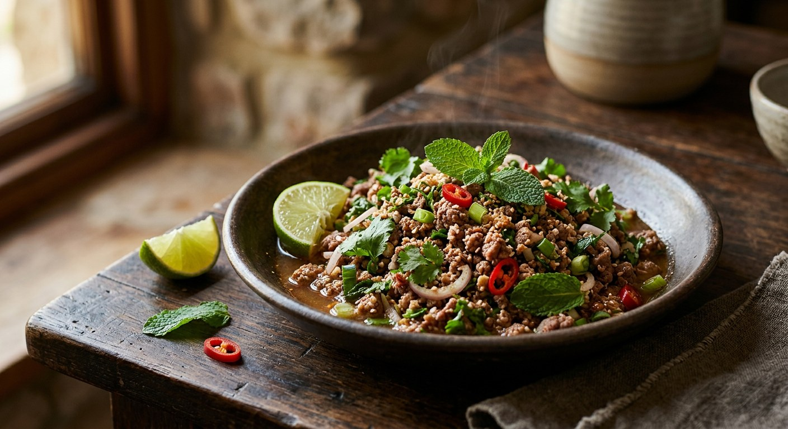

Beef, toasted rice, shallots, mint and lime — Isaan's signature salad, ordered สุก (cooked), ดิบ (raw) or ขม (bitter) depending on nerve.

ลาบ (larb) is the technique first and the dish second: meat chopped fine and dressed with a hot-sour dressing built on น้ำปลา (fish sauce), lime, chilli and the ingredient that makes it larb at all — ข้าวคั่ว, glutinous rice toasted dry and ground, which thickens the dressing and fills the room with the smell of roasted grain.
The beef version, ลาบเนื้อ, is the Isaan classic. Thai sources agree on the frame — beef, shallots, mint, coriander, spring onion, chilli powder, toasted rice, fish sauce, lime — and then split into a genuine three-way fork. ลาบสุก cooks the beef first, by grill (TrueID), blanch (Wongnai's เสือร้องไห้ version) or a brief simmer in a little water (Cookpad). ลาบดิบ is raw — beef and offal minced with the dressing, blood worked in for colour, served with the warning that raw meat is its own risk. ลาบขม adds the bitter edge: bile (น้ำดี/ดี) or เพี้ย, the partly-digested grass of the stomach, in spoonfuls the cook decides.
The Chiang Mai versions show the northern spin: พริกลาบ, a ready-made roasted-chilli-and-herb larb paste, replaces the chilli powder, and ผักไผ่ or ผักแพว (Vietnamese coriander) joins the herb set. Down south the same dish runs milder; up north it runs bitter. What never changes is the toasted rice — every single source includes it, and every one treats it as the thing that makes larb larb.
| Thai | English | Amount |
|---|---|---|
| เนื้อสันใน | Beef sirloin or rump | 300 g |
| หอมแดง | Shallots, sliced | 2 tbsp |
| สะระแหน่ | Fresh mint leaves | 1 tbsp |
| ผักชี | Coriander, chopped | 1 tbsp |
| ต้นหอม | Spring onion, sliced | 1 tbsp |
| พริกป่น | Chilli powder | 1 tbsp |
| ข้าวคั่ว | Toasted rice powder | 1 tbsp |
| น้ำปลา | Fish sauce | 1 tbsp |
| น้ำมะนาว | Lime juice | 1 tbsp |
| น้ำตาล | Sugar (optional) | ½ tbsp |
The เสือร้องไห้ pot (Wongnai, Nurse Lim): 300 g sliced เสือร้องไห้ beef blanched in hot water just until the red goes, then tossed with 4 shallots, half an onion, 3 spring onions, a bunch of mint, 3 fresh chillies, chilli powder, toasted rice, fish sauce, lime and a tablespoon of sugar — the sugar makes it the sweetest of the set. The Cookpad pot (Jar Jar, ลาบเนื้อสุก/ขม): beef simmered in a little water until just done, then onion, spring onion, coriander, sliced kaffir lime leaves, chilli powder, toasted rice, fish sauce and MSG — with เพี้ย added a pinch at a time for those who want the bitter edge. The Chiang Mai raw pot (Wongnai, TingSter): raw beef and offal minced fine with blood, dressed with พริกลาบสำเร็จ, salt, seasoning powder and bile to taste, finished with ผักไผ่, mint and spring onion.
Cooked or raw. The deepest split in larb. TrueID, Wongnai's เสือร้องไห้ and Cookpad all cook the beef — grill, blanch or simmer. Wongnai's Chiang Mai recipe and Vanena's ลาบดิบ keep it raw, mincing beef and offal with blood. The raw versions carry the explicit caveat: this is a dish for beef you trust, and every Thai source treats it as a normal, celebrated thing, not a dare.
How the beef is cooked. TrueID grills on a pan, 1–2 minutes a side. Wongnai's nurse blanches the slices. Cookpad simmers the beef in a splash of water. All three land in the same place — barely-cooked meat that finishes in the dressing.
The bitter edge. Chiang Mai's raw larb adds น้ำดี (bile) and ขี้เพลี้ย (boiled stomach contents) for bitterness; Cookpad's cooked version uses เพี้ย alone, "a pinch at a time". The sweet version — Wongnai's nurse, with a full tablespoon of sugar — refuses bitterness entirely. Ordering ลาบขม in Isaan gets you the bile; asking for it elsewhere gets you a confused look.
Blood. Vanena's raw larb minces the beef together with its blood, so the salad turns deep red; TingSter adds blood during the chopping, "more or less as you like, for the red colour". The cooked versions, obviously, skip it.
The herbs. Mint, coriander and spring onion are everywhere. The northern recipes add ผักไผ่/ผักแพว (Vietnamese coriander) and sliced kaffir lime leaves; the cooked recipes often add onion (หอมหัวใหญ่) as well as shallots — Wongnai's nurse uses both. Lemongrass appears only in the raw northern version.
Sugar and MSG. Wongnai's nurse sweetens with a tablespoon of sugar; Cookpad seasons with MSG instead; TrueID uses neither — fish sauce, lime and chilli powder only. The home-cook versions season with what the family keeps, and the family keeps what the family eats.
This recipe is translated from the following Thai-language sources. Where they disagree, we've said so.
1. TrueID Food — "สูตรลาบเนื้อ วิธีทำลาบเนื้อวัว แซ่บนัว เมนูอีสานทำง่าย อร่อยไม่ง้อร้าน" (the grilled-sirloin recipe used here) — food.trueid.net
2. Wongnai — "ลาบเนื้อเสือร้องไห้" by Nurse Lim (the blanched, sweetened version) — wongnai.com
3. Cookpad — "ลาบเนื้อ (สุก/ขม)" by Jar Jar (the simmered version with เพี้ย) — cookpad.com
4. Wongnai — "ลาบเนื้อดิบ (วัว) สูตรเชียงใหม่" by TingSter (the northern raw larb with พริกลาบ and bile) — wongnai.com
5. Wongnai — "ลาบดิบ" by Vanena Limpiyasrisakul (raw beef with blood and offal) — wongnai.com